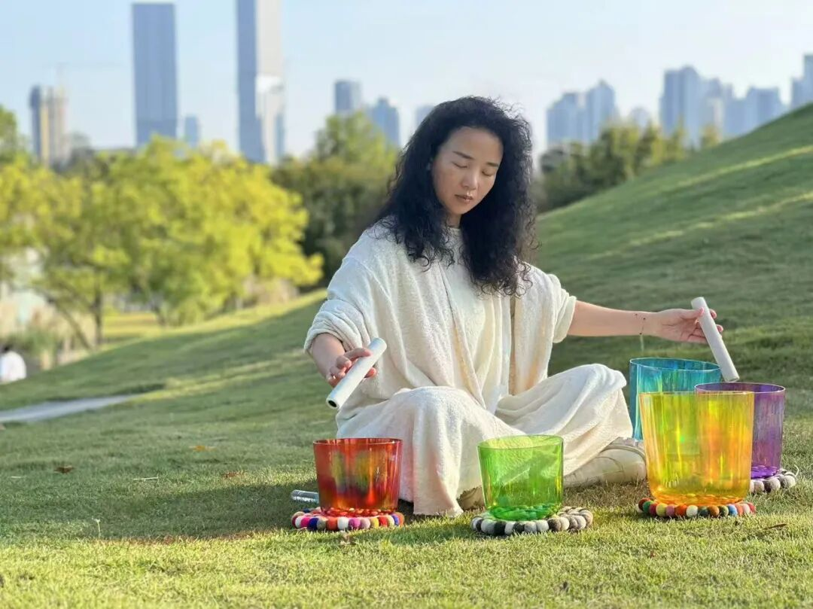
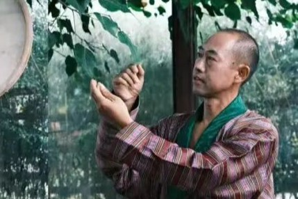

每个人都是天生的舞者，独特的身体是灵动的乐章，时刻准备与万物自然共舞。
二零二四年春天，永·舞团（Wing Dance Theatre）诞生五周年。每当新的关注者到来，都会在后台收到这样一句话：这是一个没有任何舞者的舞团，但我们与万物共舞。
是的。这个"舞团"没有一位舞者，更没有专业从事舞蹈的人。但，每当我们提出创作构想，呼吁舞者出现，各行各业、不同地域、年龄不一的朋友们就会自发前来，奔赴一个共同的艺术理想。
2024甲辰年春，我们发出"寻找有情人"的召唤，全球范围内招募舞者，共同为地球创作一出生命之舞。历经半年的连结、共创、排演，终于在深秋时节，于麓湖举办的成都CCC社群大会的舞台上，完成了舞作《众生·有情》（简称"有情"）面向世界的首次演出。
关注身边的生态环保议题，从土地和海浪中汲取创作灵感与生命力量。项目强调与当地环境、文化的深度联结。
二十位来自不同地域、不同职业背景的素人共同参与创作，包括心理咨询师、大学老师、社区服务者等各行各业的普通人。
没有专业舞台，自然就是最大的舞台。舞蹈全由素人舞者自己的身心发出，呈现纯粹而真诚的艺术表达。
探索我们的舞蹈作品，感受身体与自然、艺术与生命的深层连接

2024.10.26

2024.09

纪录片

2024.08

2024.07

音乐纪录片
来自各行各业的素人舞者，用身体书写属于自己的艺术篇章

环球旅行背包客，"书益小筑"主理人
"《有情》对素人的身体给予了非常大的信任空间，这种信任让我的身体在整个舞蹈中都能真实地流动。对于我是一种感动，一种唤醒。"
"有情"就是一种万物的底色，希望"有情"可以继续跳下去。有情如水，万物归一。

前小学老师，社区活动倡导者，环保践行者
"一周的封闭训练与排练磨合终于交了一份圆满的演出作品。很荣幸作为在地有情人加入素人共创舞作《有情》。"
将我们对地球的关切、对生态的关注、对彼此的关心透过一场身心共振的舞蹈向世界传达。

退休职员，身体探索者
"我是真正的素人。这是我第一次跳舞，非常感谢跟大家一起共舞。"
通过这次体验，我重新认识了自己的身体，发现了隐藏在日常生活背后的艺术潜能。
品牌策划、社群活动组织者
"作品排练的时间有限，伙伴们主要进行了基本功和感觉同频的训练。也正因如此，我们才能在演出时那么真实纯粹且投入。"
我相信观众能从中体会到作品的理念——众生有情（正如它的名字）。这是一件了不起的作品。

舞者、乐师、颂钵疗愈师
"常常一个人到大自然里，聆听风的声音，感受每一朵花，每一棵树在给我传递怎样的信息。"
希望能以声音的方式，成为大自然的管道，向人们传递地球母亲对她的孩子们深深的爱。

创业者
"一群素人能坚持到演出圆满已是不易，但我们不能懈怠，还是要继续练功，让这股能量持续流动下去。"
所以号召伙伴们继续接龙打卡，将舞蹈融入日常生活，让"有情"的精神延续下去。
素人舞者
城市巡演
观众感动
爱的传递
听听现场观众对《有情》的真实感受
第一次看舞蹈流泪，发生在看二十位素人舞者带来的作品《众生·有情》。说不出什么具体的理由，应该是被现场的能量共振到了。
老师从头至尾没有编排过动作，舞蹈全由素人舞者自己的身心发出。然而这场呈现背后的训练有着精心、系统的设计，从关注身边的生态环保议题，认识佛法中"有情"的概念，到基础动作的训练，再到自己即兴舞动，街头表演，写诗念诗……舞者说整个的创作过程是对自己的疗愈。
希望自己有机会也能参与一次这样的创作过程。
今天我虽然因其他工作安排没能在现场看见各位的演出，但是通过传递来的剧照和视频感受到了各位带给现场的感动和震撼，能体会到老师们真的是发自内心地在去触摸舞蹈的本质，所有人都非常的真诚。这是我见过的演出里最能让我感到"真"这个字眼的。
如果你希望加入我们，无论以何种身份：摄影师、舞者、场地提供者、演出主办方......欢迎与我们联络。
《有情》是一个没有任何资助的自发项目，所有支出由发起人和舞者自行承担。随喜本项目可扫描赞赏码布施，并请留下您的姓名。我们将会在创作纪录片与纪念画册结尾，以"有情人"名录永久珍藏。
wingdancetheatre24@gmail.com
永·舞团 Wing Dance Theatre